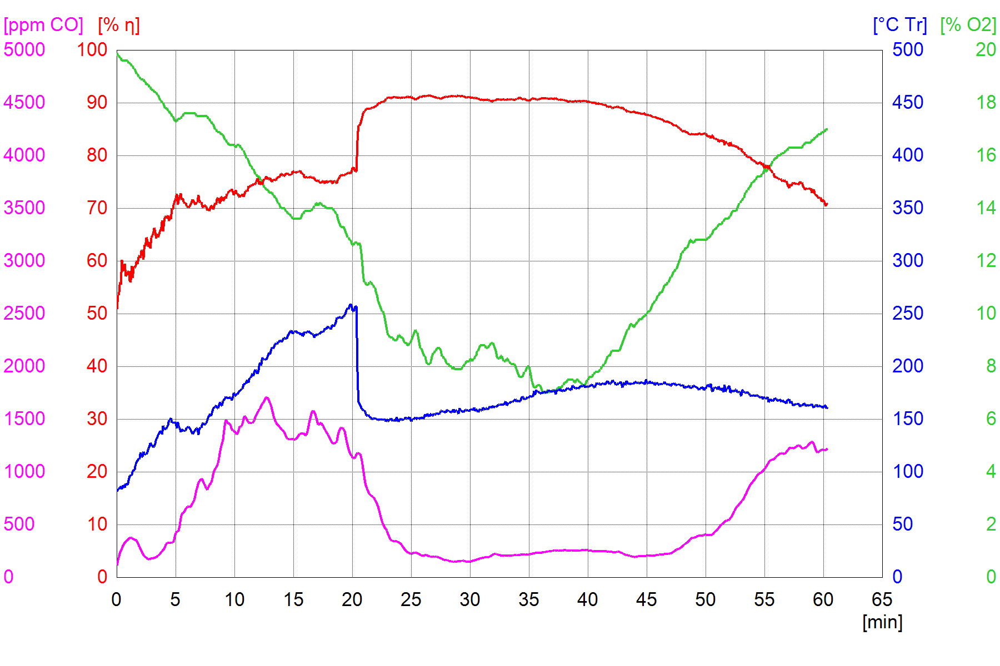

Session Batch 2018
Plan
Le principe
Le principe était de réunir une quinzaine de pyromanes expérimentés (professionnels ou non) autour des Batchrockets et des poêles de masse. Les objectifs étaient de tester de nouveaux foyers, de nouveaux systèmes de récupération de chaleur, échanger sur les nouvelles techniques et les bonnes pratiques.
Plusieurs poêles développés par l'association UZUME ont été montés et testés.

Les participants:
- Christophe G. - Poêlier, association Les Outils de l'Autonomie (organisation)
- Yasin G. - Poêlier (organisation)
- Guinevere S. (organisation)
- Sylvie G. (organisation)
- Myriam C. (organisation)
- Yann B., Atypique Charpentes
- Guillaume A., association Atelier du soleil et du vent
- Karin D.
- Benoit R. - Poêlier, contact
- Vital B. - Poêlier, MVHabitation, association Dès 2 mains
- Elios
- Eduardo M. - Poêlier, Estufas de inercia
- Daan H. - Poêlier, association Feu Follet
- Peter vd Berg - Poêlier, Batchrocket.eu
- Sébastien G. - Poêlier, association Oxalis
Les résultats de ce travail que vous trouverez sur cette page et sur ce site sont distribués librement, sous une licence open-source CC BY-SA 4.0 : vous êtes libres de partager, d'utiliser, de transformer ce travail, même pour une utilisation commerciale tant que vous citez les auteurs originaux et que vous partagez les résultats de votre travail sous les mêmes conditions. Dans notre cas, l'auteur original est Peter Van Den Berg.
Attention ! La construction d'un poêle de masse implique de nombreuses compétences et, bien que nous tentions de fournir les informations les plus claires possibles, nous ne pouvons garantir la réussite de votre construction. Nous ne donc saurions être tenus responsables de tout dommage, matériel ou immatériel causé à vous ou à vos équipements.
Nous remerçions chaleureusement toute l'équipe de bénévoles pour leur travail et l'énergie qu'ils ont apporté.
Nous remerçions chaleureusement aussi la briquetterie PRSE (Produits Réfractaires du Sud Est) pour la fourniture de la matière première et pour son soutien.
Nous remerçions aussi l'éco-centre de Varaire (Sébastien Georgel, Élisabeth Eisenmann) pour son accueil et la mise à disposition du lieu pour la semaine.
Le nouveau coeur de chauffe
Un nouveau coeur de chauffe basé sur le Batchrocket avait été testé, modifié, testé de nouveau, etc. pendant le mois de Décembre 2017. Le développement initial a été publié sur le forum anglais de développement : donkey32.proboards.com/thread/2383/batch-cookstove-small-riser.
Nous avions observé que le double vortex se formait uniquement dans la partie basse de la cheminée interne du Batchrocket, ce qui signifie que la plus grande partie des turbulences y étaient confinées.
L'idée de base de ce coeur de chauffe est donc de créer un vortex plus turbulent en partie basse du turbuleur pour réduire la hauteur du coeur de chauffe, ce qui permet de faire des poêles de masse plus petits. Au dessus du turbuleur se trouve une petite cloche qui permet la fin du mélange des hydrocarbures issus de la pyrolyse du bois et de l'oxygène. Cette petite cloche encaisse aussi les chocs thermiques les plus violents et préserve les autres parties du poêle de masse.
Les résultats de combustion ont été présentés et de nouveaux modèles basés sur ce coeur de chauffe ont été construits et testés.
Il s'agit d'un travail collaboratif : le demi-octogne est une idée de Peter van den Berg, le développement principal a été effectué par l'association UZUME en se basant sur le Batchrocket et sur l'aide et les travaux prééxistants de pyromanes du monde entier. À ce titre, ce coeur de chauffe est distribué sous une licence open-source CC BY-SA 4.0. Merci de bien lire les termes de la licence.
-

- 
Voici les deux dernières analyses réalisées sur la cuisinière avec une charge de 8 kg de bois et sur le P14 avec une charge de 14 kg de bois. Dans les deux cas les allumages ont été difficiles. Pour le P14, parce que le conduit d'évacuation des fumées était froid, non isolé et coudé. Et pour la C8, le conduit était froid, non isolé, et il n'y avait pas de clapet de démarrage. Les phases de démarrage sont donc beaucoup plus longues qu'à la normale !
Globalement, ça brûle très très très bien.
Ci-dessous quelques photos de ce coeur de chauffe dans la cuisinière de masse. Une des planchas a été retirée et le coeur de chauffe a continué a brûler normalement, malgré le manque de tirage lié à l'ouverture béante juste au dessus du turbuleur. Aucune fumée n'était visible !


Les poêles de masse testés
Une cuisinière de masse : la C8
Il s'agit d'une cuisinière de masse qui brûle 8 kg de bois par flambée. Polyvalente et compacte, elle permet à la fois de chauffer un espace conséquent (3700W avec 3 flambées par jour), de cuisiner sur la plancha ou dans le four, de sécher des fruits et légumes, d'avoir une bouilloire avec de l'eau chaude, etc..
La plancha lui permet de chauffer plus rapidement le volume à chauffer, de ne pas saturer les briques en chaleur et de cuisiner.. mais en contrepartie la part de chauffage par convection est augmentée.
Les objectifs :

- Cuisson dans un four noir et séchage sur le dessus du poêle;
- Métallerie indépendante de la maçonnerie;
- Conduit de raccordement en 180 mm;
- Principe de cloche dans cloche pour une grande résistance structurelle;
- Tout le poêle est accessible pour le nettoyage et l'entretien;
- Les briques isolantes dans le vortexeur sont montées à sec et facilement remplaçables;
- Poids total inférieur à 1000 kg;
- Hauteur finale inférieure à 90 cm;
- Rendement de combustion autour de 98% (soit 500ppm de CO moyen à 13% d'O2, six fois en dessous de la norme);
- Feu stable jusqu'à 7,0 % d'O2;
- Rendement total (combustion x récupération) supérieur à 80%;
- 4 flambées par jour sans perte notable de rendement;
- Pas de chauffage d'eau chaude sanitaire;
Quelques photos de la cuisinière de masse :


Les plans de la version testée pendant la session batch :
Le plan en 3D avec le logiciel Sketchup Make (logiciel gratuit à télécharger sur cette page) est disponible sur ce lien :


Les résultats de la version testée pendant la session batch :
Concernant la solidité :
- La partie gauche du poêle, juste après l'ouverture de la cloche du coeur de chauffe, subit un stress thermique important.
- Les planchas subissent de gros chocs thermiques sans flamber. Lors des tests, il a été mesuré qu'au même moment, les 4 planchas avaient des températures respectives de 650, 450, 250 et 150 °C. Le fait qu'il y ait 4 planchas à la place d'une seule (comme sur la V2) permet bien d'empêcher le flambement.
- Le support des planchas ne doit pas être soudé au cadre des planchas, sinon ça flambe !
- Mieux vaut que le coeur de chauffe soit maçonné contre la peau extérieure avec un joint de dilatation (du carton) entre les deux. Sinon il doit être maçonné avec les briques à plat. L'idéal étant de comprimer le coeur de chauffe avec des cornières aux arêtes et des feuillards métalliques.
Concernant la récupération de chaleur : Le système de la V3 qui séparait en deux le flux de gaz n'était pas suffisant pour extraire toute la chaleur des gaz. Dans ce cas, la température moyenne de sortie des gaz était d'environ 200°C.
Concernant la combustion : 5 analyses ont été faites, mais pendant les analyses la sonde CO (monoxyde de carbone, 500€ pièce !) de notre analyseur de combustion est morte. Une seule analyse représentative a pu être faite avec l'analyseur de combustion de Peter vd Berg. Néanmoins, de nombreuses analyses nasales et visuelles nous font penser que ce petit coeur de chauffe brûle très bien !
Cette analyse a été faite sur un poêle chaud, avec un système ce chicane pour l'extraction de la chaleur. Le système des chicanes est bon pour récupérer la chaleur des fumées, mais a rendu notre clapet de démarrage inutile. La phase de démarrage est donc rallongée. Les résultats de cette flambée sont :
- O2 moyen : %
- Rendement de combustion moyen : %
- Rendement moyen d'extraction de chaleur (PCI) : %
- Rendement total moyen (PCI) : %
- CO dilué moyen : ppm
- CO non dilué moyen : ppm
- Température moyenne des fumées à la sortie du poêle : .